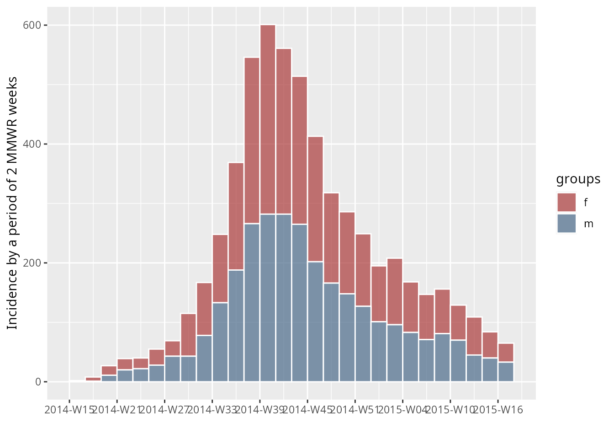
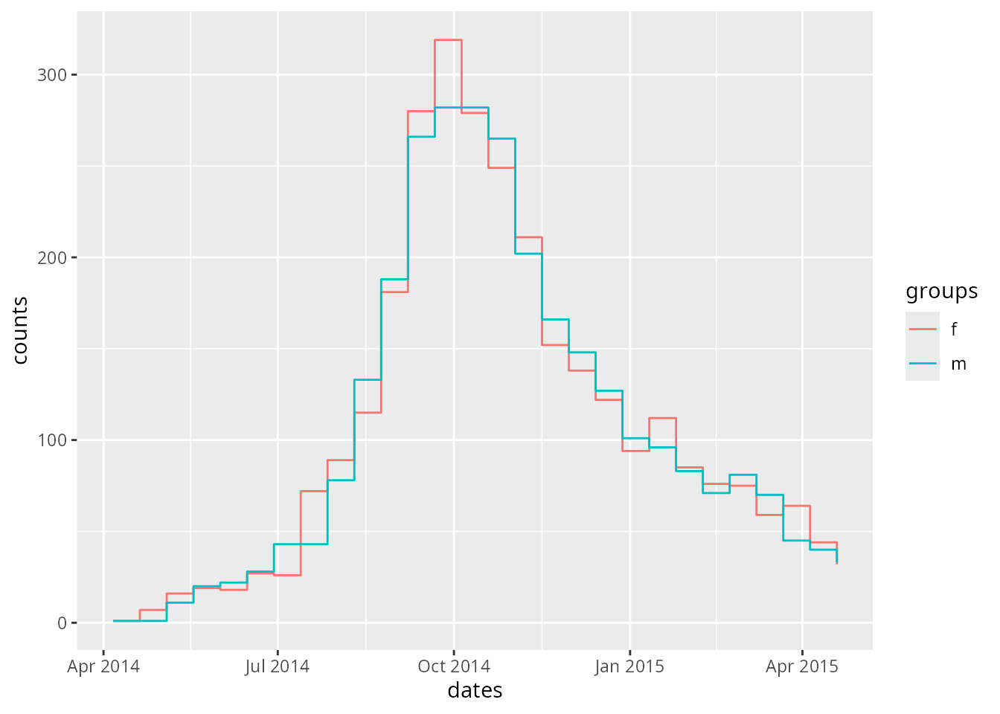
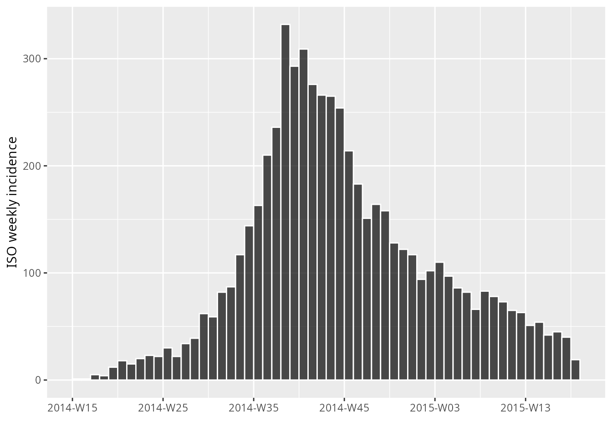
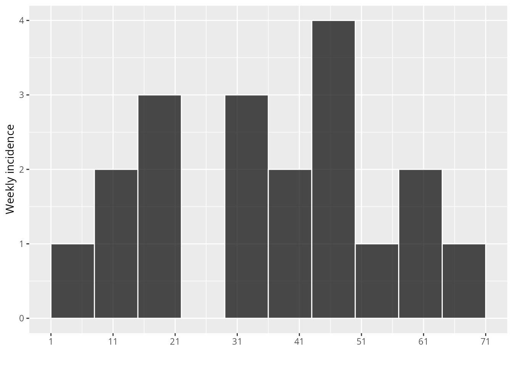

vignettes/conversions.Rmd
conversions.RmdThis vignette documents to types of conversion which can be made using the incidence class:
‘exports’: conversion from an incidence object to another type of object; this can be useful for processing incidence data in another software, or for reporting results.
‘imports’conversion from already computed incidence into an incidence object; this can be useful for using features of the incidence package for data handling and plotting with incidence data computed elsewhere.
To export results, we first compute semi-weekly incidence (with weeks starting on Sunday, the beginning of the CDC epiweek) by gender from the simulated Ebola data used in the overview vignette:
library(outbreaks)
library(incidence)
dat <- ebola_sim$linelist$date_of_onset
i_14 <- incidence(dat, interval = "2 epiweeks", groups = ebola_sim$linelist$gender)
i_14
#> <incidence object>
#> [5888 cases from days 2014-04-06 to 2015-04-19]
#> [5888 cases from MMWR weeks 2014-W15 to 2015-W16]
#> [2 groups: f, m]
#>
#> $counts: matrix with 28 rows and 2 columns
#> $n: 5888 cases in total
#> $dates: 28 dates marking the left-side of bins
#> $interval: 2 weeks
#> $timespan: 379 days
#> $cumulative: FALSE
plot(i_14, border = "white")
#> Warning: `aes_string()` was deprecated in ggplot2 3.0.0.
#> ℹ Please use tidy evaluation idioms with `aes()`.
#> ℹ See also `vignette("ggplot2-in-packages")` for more information.
#> ℹ The deprecated feature was likely used in the incidence package.
#> Please report the issue at <https://github.com/reconhub/incidence/issues>.
#> This warning is displayed once every 8 hours.
#> Call `lifecycle::last_lifecycle_warnings()` to see where this warning was
#> generated.
To export the data to a data.frame, one simply
needs:
as.data.frame(i_14)
#> dates weeks f m
#> 1 2014-04-06 2014-W15 1 1
#> 2 2014-04-20 2014-W17 7 1
#> 3 2014-05-04 2014-W19 16 11
#> 4 2014-05-18 2014-W21 19 20
#> 5 2014-06-01 2014-W23 18 22
#> 6 2014-06-15 2014-W25 27 28
#> 7 2014-06-29 2014-W27 26 43
#> 8 2014-07-13 2014-W29 72 43
#> 9 2014-07-27 2014-W31 89 78
#> 10 2014-08-10 2014-W33 115 133
#> 11 2014-08-24 2014-W35 181 188
#> 12 2014-09-07 2014-W37 280 266
#> 13 2014-09-21 2014-W39 319 282
#> 14 2014-10-05 2014-W41 279 282
#> 15 2014-10-19 2014-W43 249 265
#> 16 2014-11-02 2014-W45 211 202
#> 17 2014-11-16 2014-W47 152 166
#> 18 2014-11-30 2014-W49 138 148
#> 19 2014-12-14 2014-W51 122 127
#> 20 2014-12-28 2014-W53 94 101
#> 21 2015-01-11 2015-W02 112 96
#> 22 2015-01-25 2015-W04 85 83
#> 23 2015-02-08 2015-W06 76 71
#> 24 2015-02-22 2015-W08 75 81
#> 25 2015-03-08 2015-W10 59 70
#> 26 2015-03-22 2015-W12 64 45
#> 27 2015-04-05 2015-W14 44 40
#> 28 2015-04-19 2015-W16 32 33The first column contains the dates marking the (inclusive) left side of the time intervals used for computing incidence, and the other columns give counts for the different groups. This function also has an option for exporting data as a ‘long’ format, i.e. with a column for ‘groups’ and a column for counts. This format can be useful especially when working with ggplot2, which expect data in this shape:
df <- as.data.frame(i_14, long = TRUE)
head(df)
#> dates weeks counts groups
#> 1 2014-04-06 2014-W15 1 f
#> 2 2014-04-20 2014-W17 7 f
#> 3 2014-05-04 2014-W19 16 f
#> 4 2014-05-18 2014-W21 19 f
#> 5 2014-06-01 2014-W23 18 f
#> 6 2014-06-15 2014-W25 27 f
tail(df)
#> dates weeks counts groups
#> 51 2015-02-08 2015-W06 71 m
#> 52 2015-02-22 2015-W08 81 m
#> 53 2015-03-08 2015-W10 70 m
#> 54 2015-03-22 2015-W12 45 m
#> 55 2015-04-05 2015-W14 40 m
#> 56 2015-04-19 2015-W16 33 m
## example of custom plot using steps:
library(ggplot2)
ggplot(df, aes(x = dates, y = counts)) + geom_step(aes(color = groups))
Finally, note that when ISO weeks are used, these are also reported in the output:
i_7 <- incidence(dat, interval = "week")
i_7
#> <incidence object>
#> [5888 cases from days 2014-04-07 to 2015-04-27]
#> [5888 cases from ISO weeks 2014-W15 to 2015-W18]
#>
#> $counts: matrix with 56 rows and 1 columns
#> $n: 5888 cases in total
#> $dates: 56 dates marking the left-side of bins
#> $interval: 1 week
#> $timespan: 386 days
#> $cumulative: FALSE
plot(i_7, border = "white")
head(as.data.frame(i_7))
#> dates weeks isoweeks counts
#> 1 2014-04-07 2014-W15 2014-W15 1
#> 2 2014-04-14 2014-W16 2014-W16 1
#> 3 2014-04-21 2014-W17 2014-W17 5
#> 4 2014-04-28 2014-W18 2014-W18 4
#> 5 2014-05-05 2014-W19 2014-W19 12
#> 6 2014-05-12 2014-W20 2014-W20 18
tail(as.data.frame(i_7))
#> dates weeks isoweeks counts
#> 51 2015-03-23 2015-W13 2015-W13 51
#> 52 2015-03-30 2015-W14 2015-W14 54
#> 53 2015-04-06 2015-W15 2015-W15 42
#> 54 2015-04-13 2015-W16 2015-W16 45
#> 55 2015-04-20 2015-W17 2015-W17 40
#> 56 2015-04-27 2015-W18 2015-W18 19The function as.incidence facilitates the conversion of
pre-computed incidences to an incidence object. Typically, the
input will be imported into R from a .csv file or other
spreadsheet formats.
as.incidence is a generic with methods for several types
of objects (see ?as.incidence). The main method is
matrix, as other types are coerced to matrix
first and then passed to as.incidence.matrix:
args(incidence:::as.incidence.matrix)
#> function (x, dates = NULL, interval = NULL, standard = TRUE,
#> isoweeks = standard, ...)
#> NULLThe only mandatory argument x is a table of counts, with
time intervals in rows and groups in columns; if there are no groups,
then the column doesn’t need a name; but if there are several groups,
then columns should be named to indicate group labels. Optionally,
dates can be provided to indicate the (inclusive) lower
bounds of the time intervals, corresponding to the rows of
x; most sensible date formats will do; if indicated as a
character string, make sure the format is YYYY-mm-dd,
e.g. 2017-04-01 for the 1st April 2017.
Let us illustrate the conversion using a simple vector of incidence:
vec <- c(1,2,3,0,3,2,4,1,2,1)
i <- as.incidence(vec)
i
#> <incidence object>
#> [19 cases from days 1 to 10]
#>
#> $counts: matrix with 10 rows and 1 columns
#> $n: 19 cases in total
#> $dates: 10 dates marking the left-side of bins
#> $interval: 1 day
#> $timespan: 10 days
#> $cumulative: FALSE
plot(vec, type = "s")
plot(i, border = "white")Assuming the above incidences are computed weekly, we would then use:
i <- as.incidence(vec, interval = 7)
i
#> <incidence object>
#> [19 cases from days 1 to 64]
#>
#> $counts: matrix with 10 rows and 1 columns
#> $n: 19 cases in total
#> $dates: 10 dates marking the left-side of bins
#> $interval: 7 days
#> $timespan: 64 days
#> $cumulative: FALSE
plot(i, border = "white")
Note that in this case, incidences have been treated as per week, and corresponding dates in days have been computed during the conversion (the first day is always ‘1’), so that the first days of weeks 1, 2, 3… are:
i$dates
#> [1] 1 8 15 22 29 36 43 50 57 64In practice, it is best to provide the actual dates marking the lower bounds of the time intervals. We can illustrate this by a round trip using the example of the previous section:
## convertion: incidence --> data.frame:
i_14
#> <incidence object>
#> [5888 cases from days 2014-04-06 to 2015-04-19]
#> [5888 cases from MMWR weeks 2014-W15 to 2015-W16]
#> [2 groups: f, m]
#>
#> $counts: matrix with 28 rows and 2 columns
#> $n: 5888 cases in total
#> $dates: 28 dates marking the left-side of bins
#> $interval: 2 weeks
#> $timespan: 379 days
#> $cumulative: FALSE
df <- as.data.frame(i_14)
head(df)
#> dates weeks f m
#> 1 2014-04-06 2014-W15 1 1
#> 2 2014-04-20 2014-W17 7 1
#> 3 2014-05-04 2014-W19 16 11
#> 4 2014-05-18 2014-W21 19 20
#> 5 2014-06-01 2014-W23 18 22
#> 6 2014-06-15 2014-W25 27 28
tail(df)
#> dates weeks f m
#> 23 2015-02-08 2015-W06 76 71
#> 24 2015-02-22 2015-W08 75 81
#> 25 2015-03-08 2015-W10 59 70
#> 26 2015-03-22 2015-W12 64 45
#> 27 2015-04-05 2015-W14 44 40
#> 28 2015-04-19 2015-W16 32 33
## conversion: data.frame --> incidence
new_i <- as.incidence(df[group_names(i_14)], df$dates, interval = "2 epiweeks")
new_i
#> <incidence object>
#> [5888 cases from days 2014-04-06 to 2015-04-19]
#> [5888 cases from MMWR weeks 2014-W15 to 2015-W16]
#> [2 groups: f, m]
#>
#> $counts: matrix with 28 rows and 2 columns
#> $n: 5888 cases in total
#> $dates: 28 dates marking the left-side of bins
#> $interval: 2 weeks
#> $timespan: 379 days
#> $cumulative: FALSE
## check round trip
identical(new_i, i_14)
#> [1] TRUE